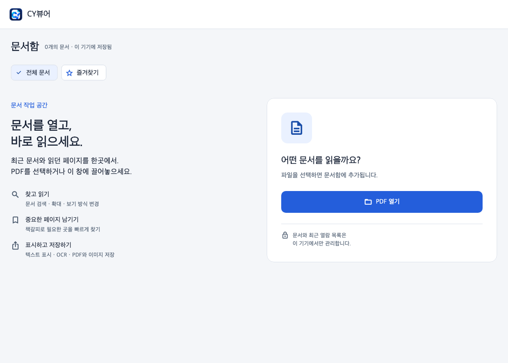

CYVIEWER · PDF WORKSPACE
내 기기에서,
바로 여는 PDF.
읽고, 찾고, 중요한 내용을 남기세요.
Mac, Windows, 웹에서 같은 CY뷰어를 만납니다.

DOWNLOAD
어디서든, CY뷰어.
아래에서 기기에 맞는 버전을 선택하세요.
KEEP UP TO DATE
새 버전도 앱 안에서.
Mac 1.5.0·Windows 1.2.0부터 앱을 열면 새 버전을 자동으로 확인합니다. 이전 버전은 이 페이지에서 새 설치 파일을 한 번 받아 설치해 주세요.
Windows 업데이트
새 버전 안내에서 다운로드를 선택하세요. 파일 검증이 끝나면 저장하지 않은 문서를 먼저 저장하고 ‘설치’를 누릅니다. 앱이 종료된 뒤 업데이트가 설치되고 다시 실행됩니다.
Mac 업데이트
앱에서 새 버전을 알리고 설치 파일을 다운로드·검증한 뒤 DMG를 엽니다. CYViewer.app을 Applications로 옮겨 기존 앱을 교체해 주세요. 현재 Mac 배포본은 Apple 서명·공증 전이므로 마지막 교체는 직접 진행합니다.
웹앱을 홈 화면에 추가하기
웹앱을 연 뒤 iPhone·iPad의 Safari에서는 공유 → ‘홈 화면에 추가’를 선택하세요. Android의 Chrome에서는 메뉴 → ‘홈 화면에 추가’ 또는 ‘앱 설치’를 선택하세요. 데스크톱에서도 지원 브라우저의 설치 메뉴를 사용할 수 있습니다.
웹앱으로 이동 ↗다운로드와 문서 보관
설치 파일은 CY뷰어의 공식 GitHub 릴리스에서 받습니다. PDF 문서는 기기에서 처리합니다. 웹앱은 최근 PDF 5개의 사본을 이 브라우저에 저장합니다. 최근 목록에서 제거하면 사본도 삭제됩니다. 브라우저 데이터 삭제나 저장 공간 정리로 사라질 수 있으므로 원본은 별도로 보관해 주세요.